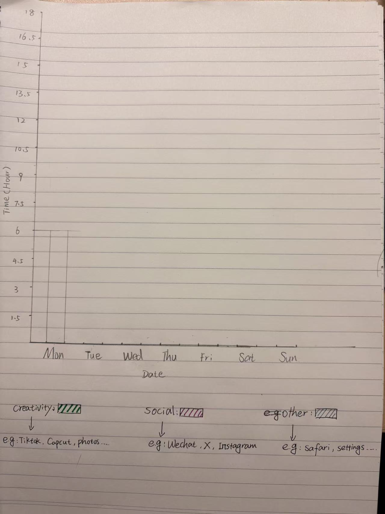
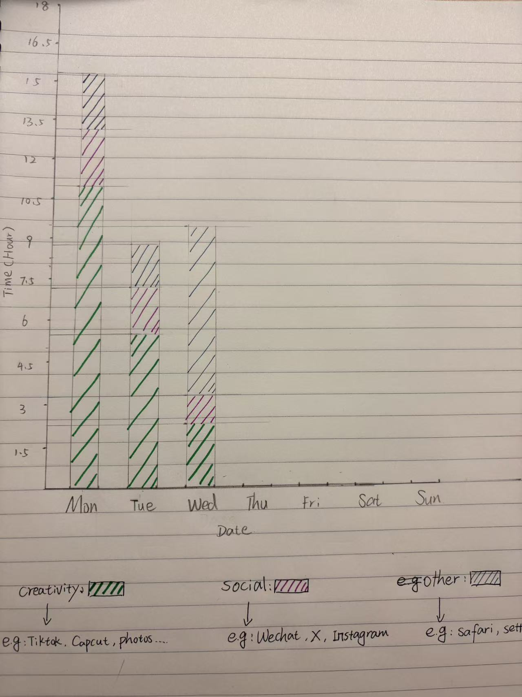
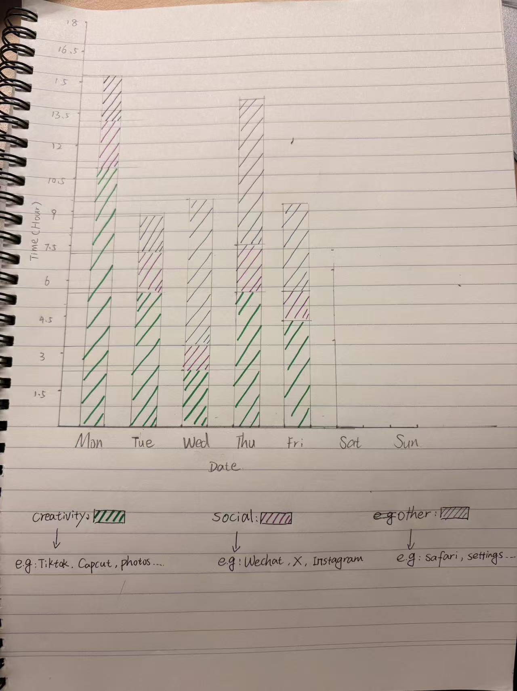
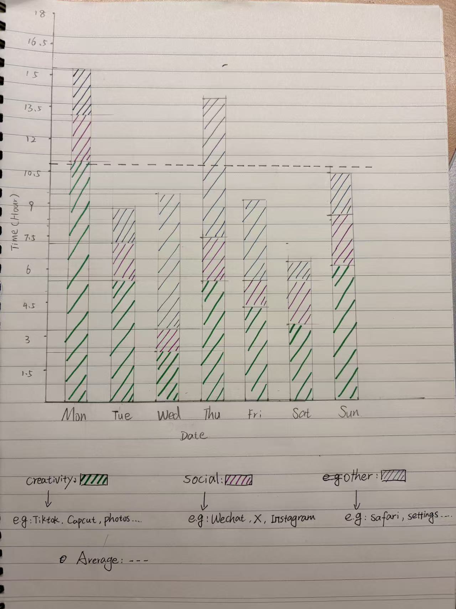
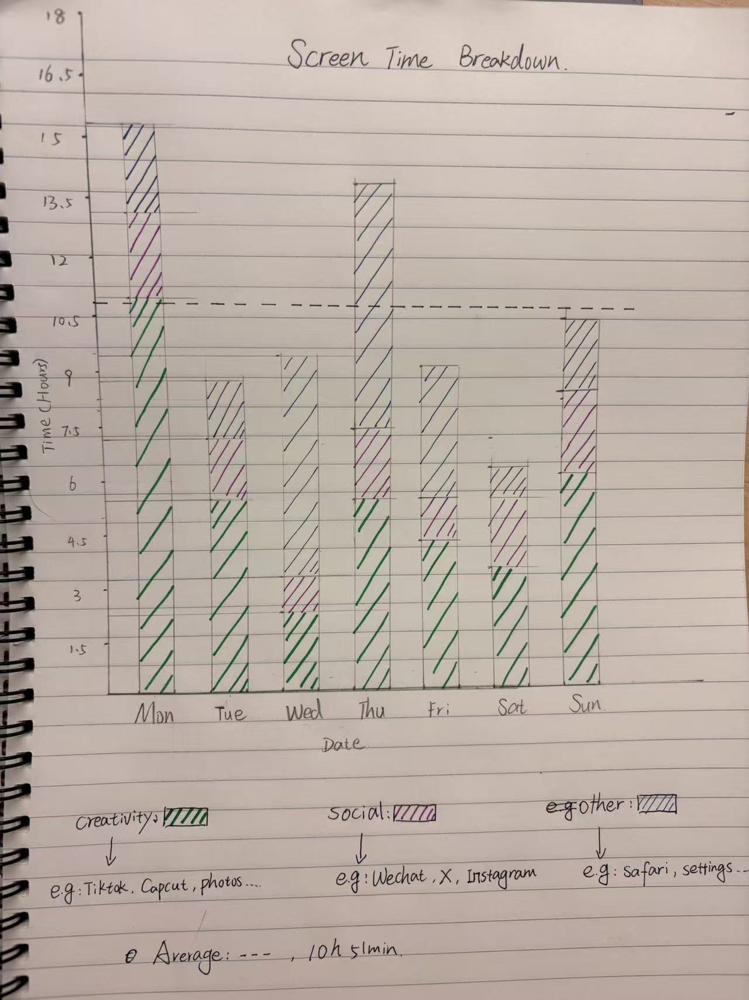

Date: 6 August 2026
I used my iPhone screen time data from last week to create a hand-drawn stacked bar chart showing my daily usage across three categories: Creativity, Social, and Other.
Each photo shows a stage of the drawing process, from sketching the framework to completing each day's bar.





I showed my screen time data from last week with hand-drawn stacked bar charts, which are divided into three categories: creativity, social and others. The most satisfactory thing is that the average line (10 hours and 51 minutes) has been added to make the chart more valuable. If I had more time, I would improve the proportional accuracy of the columns and add more data labels. What surprised me most was that creative apps (such as TikTok and CapCut) took up a large part of my screen time, which I hadn't realized before.